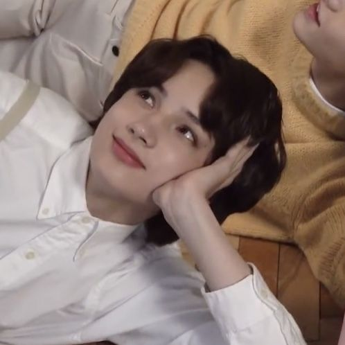
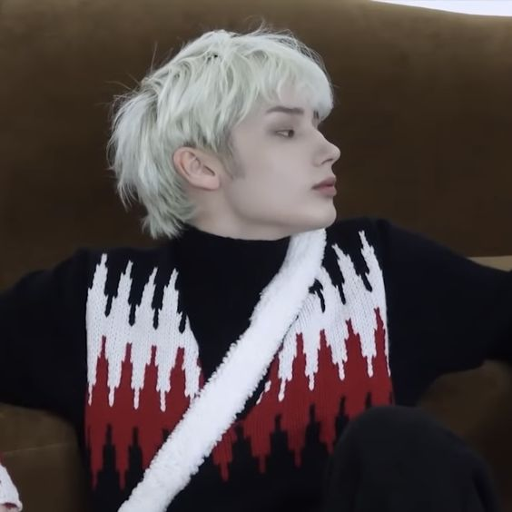
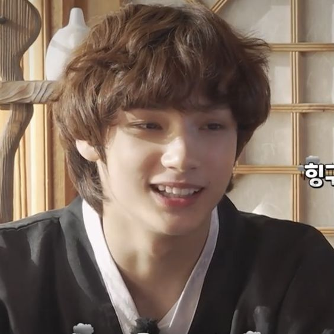

Huening Kai
♡
home = TXT



Quem é Huening Kai?
- Nome artístico: Huening Kai (휴닝 카이)
- Nome de nascimento: Kai Kamal Huening
- Posição: Dançarino, Vocalista, Rapper e Visual
- Aniversário: 14 de agosto de 2002
- Signo do Zodíaco: Leão
- Zodíaco Chinês: Cavalo
- Altura: 1.83 cm
- Tipo sanguíneo: A
- MBTI: ENFP
- Emoji representativo: 🐧
- Nacionalidade: Americano
Curiosidades sobre Huening Kai ♡
- Nasceu em Honolulu, Havaí
- Se mudou para a Coreia do Sul quando tinha 8 anos
- Hobbies: Tocar instrumentos, nadar e jogar videogame
- O pai do Huening nasceu no Brasil, porém foi criado nos EUA
- É extremamente doce e animado, um tanto curioso e desajeitado
- O mesmo adora frutas e exposição ao ar fresco do outono
- Hyuka é muito caloroso e adora contato físico, expressando assim todos
os seus sentimentos verdadeiros.